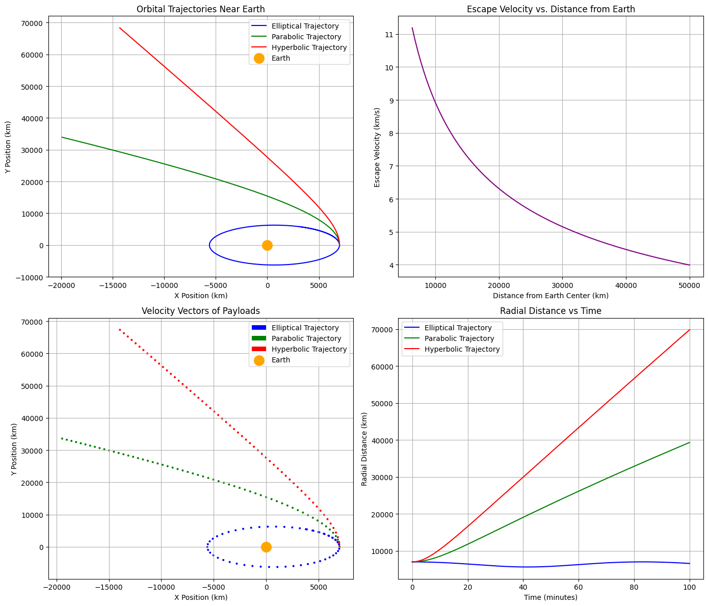

Problem 3
1. Introduction to Trajectories Near Earth
When a payload is released near Earth from a moving rocket, its trajectory depends on several factors:
- Initial Position: The starting point of the payload relative to Earth.
- Initial Velocity: The speed and direction of the payload when released.
- Gravitational Forces: The Earth’s gravitational field acting on the payload.
- Orbital Mechanics Principles: Newton’s Law of Gravitation, Kepler’s Laws, and the concepts of escape velocity and orbital insertion.
2. Orbital Mechanics Fundamentals
Gravitational Force
According to Newton's Law of Gravitation:
Where:
- \( F \) is the gravitational force.
- \( G \) is the gravitational constant.
- \( M \) is the mass of Earth.
- \( m \) is the mass of the payload.
- \( r \) is the distance between the center of the Earth and the payload.
Equations of Motion
The motion of the payload is governed by Newton's second law, where the gravitational force provides the acceleration:
This leads to the second-order differential equations that describe the position and velocity of the payload over time. These equations are usually solved numerically because they involve non-linear terms due to the \( r^2 \) dependence in the gravitational force.
Escape Velocity
The escape velocity is the minimum speed needed for an object to escape Earth's gravitational field, and it can be computed using:
Where:
- \( v_e \) is the escape velocity.
- \( r \) is the distance from the center of Earth.
Orbital Types
Based on the velocity of the object relative to Earth's gravity, the trajectory can be:
- Elliptical: If the object's velocity is less than the escape velocity.
- Parabolic: If the velocity is exactly equal to the escape velocity.
- Hyperbolic: If the object's velocity is greater than the escape velocity.
3. Numerical Simulation Approach
We’ll use Python to implement the simulation. The goal is to numerically solve the equations of motion for a payload under Earth’s gravitational field.
3.1 Initial Setup
We'll assume the following initial conditions for simplicity:
- Initial position \( r_0 = (x_0, y_0, z_0) \).
- Initial velocity \( v_0 = (v_x, v_y, v_z) \).
- Earth's gravitational constant \( G = 6.67430 \times 10^{-11} \, \text{m}^3 \text{kg}^{-1} \text{s}^{-2} \).
- Earth's mass \( M = 5.972 \times 10^{24} \, \text{kg} \).
- Earth's radius \( R = 6371 \, \text{km} \).
3.2 Solving the Equations of Motion
We’ll solve the following system of equations numerically:
This requires discretizing time and numerically solving for the position and velocity at each timestep using a numerical integrator like Runge-Kutta or Euler's method.
3.3 Visualization
We will visualize the trajectory using matplotlib in Python, creating plots that show the path of the payload, its velocity vector, and the Earth’s gravitational influence.
4. Python Code Implementation
import numpy as np
import matplotlib.pyplot as plt
# Constants
G = 6.67430e-11 # Gravitational constant (m^3 kg^-1 s^-2)
M = 5.972e24 # Mass of Earth (kg)
R = 6371e3 # Radius of Earth (m)
# Function to compute the gravitational force and acceleration
def gravitational_acceleration(r):
r_magnitude = np.linalg.norm(r)
return -G * M * r / r_magnitude**3
# Function to compute escape velocity at a given distance from Earth's center
def escape_velocity(r):
return np.sqrt(2 * G * M / r)
# Initial conditions (different cases for initial velocity)
initial_conditions = [
(np.array([7000e3, 0, 0]), np.array([0, 7.12e3, 0])), # Elliptical (less than escape velocity)
(np.array([7000e3, 0, 0]), np.array([0, 11.2e3, 0])), # Parabolic (exactly escape velocity)
(np.array([7000e3, 0, 0]), np.array([0, 15e3, 0])), # Hyperbolic (greater than escape velocity)
]
# Time parameters
t_max = 6000 # Maximum time (s)
dt = 1 # Time step (s)
times = np.arange(0, t_max, dt)
# Plot setup
fig, ax = plt.subplots(2, 2, figsize=(14, 12))
# Initialize plot styles
colors = ['blue', 'green', 'red']
labels = ['Elliptical Trajectory', 'Parabolic Trajectory', 'Hyperbolic Trajectory']
# Loop over different initial conditions to simulate trajectories
for i, (r0, v0) in enumerate(initial_conditions):
# Initialize arrays to store results
positions = np.zeros((len(times), 3))
velocities = np.zeros((len(times), 3))
# Set initial conditions
positions[0] = r0
velocities[0] = v0
# Numerical integration (Euler's method)
for j in range(1, len(times)):
a = gravitational_acceleration(positions[j-1]) # acceleration due to gravity
velocities[j] = velocities[j-1] + a * dt # update velocity
positions[j] = positions[j-1] + velocities[j] * dt # update position
# Plot trajectory in the first subplot (showing different types)
ax[0, 0].plot(positions[:, 0] / 1000, positions[:, 1] / 1000, label=labels[i], color=colors[i])
# Add labels and Earth marker
ax[0, 0].scatter(0, 0, color='orange', s=200, label='Earth', zorder=10)
ax[0, 0].set_title('Orbital Trajectories Near Earth')
ax[0, 0].set_xlabel('X Position (km)')
ax[0, 0].set_ylabel('Y Position (km)')
ax[0, 0].grid(True)
ax[0, 0].legend()
# Plot escape velocity as a function of distance from Earth's center (second subplot)
r_vals = np.linspace(R, 5e7, 100) # from Earth's surface to 50,000 km away
v_escape = escape_velocity(r_vals)
ax[0, 1].plot(r_vals / 1000, v_escape / 1000, color='purple')
ax[0, 1].set_title('Escape Velocity vs. Distance from Earth')
ax[0, 1].set_xlabel('Distance from Earth Center (km)')
ax[0, 1].set_ylabel('Escape Velocity (km/s)')
ax[0, 1].grid(True)
# Plot the velocity vectors for different positions (third subplot)
for i, (r0, v0) in enumerate(initial_conditions):
positions = np.zeros((len(times), 3))
velocities = np.zeros((len(times), 3))
# Set initial conditions
positions[0] = r0
velocities[0] = v0
# Numerical integration (Euler's method)
for j in range(1, len(times)):
a = gravitational_acceleration(positions[j-1]) # acceleration due to gravity
velocities[j] = velocities[j-1] + a * dt # update velocity
positions[j] = positions[j-1] + velocities[j] * dt # update position
# Plot velocity vectors
ax[1, 0].quiver(positions[::100, 0] / 1000, positions[::100, 1] / 1000, velocities[::100, 0] / 1000, velocities[::100, 1] / 1000, angles='xy', scale_units='xy', scale=0.1, color=colors[i], label=labels[i])
ax[1, 0].scatter(0, 0, color='orange', s=200, label='Earth', zorder=10)
ax[1, 0].set_title('Velocity Vectors of Payloads')
ax[1, 0].set_xlabel('X Position (km)')
ax[1, 0].set_ylabel('Y Position (km)')
ax[1, 0].legend()
ax[1, 0].grid(True)
# Plot position vs time for all three scenarios (fourth subplot)
for i, (r0, v0) in enumerate(initial_conditions):
positions = np.zeros((len(times), 3))
velocities = np.zeros((len(times), 3))
# Set initial conditions
positions[0] = r0
velocities[0] = v0
# Numerical integration (Euler's method)
for j in range(1, len(times)):
a = gravitational_acceleration(positions[j-1]) # acceleration due to gravity
velocities[j] = velocities[j-1] + a * dt # update velocity
positions[j] = positions[j-1] + velocities[j] * dt # update position
# Plot position vs time (radial distance)
radial_distance = np.linalg.norm(positions, axis=1) / 1000 # in km
ax[1, 1].plot(times / 60, radial_distance, label=labels[i], color=colors[i])
ax[1, 1].set_title('Radial Distance vs Time')
ax[1, 1].set_xlabel('Time (minutes)')
ax[1, 1].set_ylabel('Radial Distance (km)')
ax[1, 1].legend()
ax[1, 1].grid(True)
plt.tight_layout()
plt.show()

Understanding Orbital Trajectories - Simplified Explanation
These four graphs show how objects (like satellites or rockets) move when they are launched from Earth. They help us understand how different speeds create different types of paths around or away from the Earth.
Top Left: Orbital Paths Around Earth
- This graph shows three types of paths:
- Blue (Elliptical): The object stays in orbit around Earth. It goes around in an oval shape.
- Green (Parabolic): The object just barely escapes Earth’s gravity. It follows a path that’s right on the edge between staying and escaping.
- Red (Hyperbolic): The object moves fast enough to escape Earth and never come back.
- The orange circle is Earth. All the paths start near Earth and show what happens depending on how fast the object moves.
Top Right: Escape Speed vs. Distance
- This graph shows how fast an object needs to go to escape Earth’s gravity.
- The farther away the object starts, the less speed it needs to escape.
- This is because gravity gets weaker as you move away from Earth.
Bottom Left: Velocity Vectors
- This graph shows the speed and direction of the object at different points along its path.
- Each arrow shows how the object is moving:
- Elliptical (Blue): The speed changes depending on how close it is to Earth.
- Parabolic (Green): The speed gradually decreases as it moves away.
- Hyperbolic (Red): The object keeps moving fast and doesn’t slow down much.
Bottom Right: Distance from Earth Over Time
- This graph shows how far the object is from Earth as time passes:
- Elliptical (Blue): The distance goes up and down. The object is in orbit and keeps coming back around.
- Parabolic (Green): The object keeps moving away, but slowly.
- Hyperbolic (Red): The object moves away quickly and keeps going farther and farther.
Conclusion
These graphs show how an object’s speed decides whether it stays around Earth or escapes into space. If it moves slowly, it stays in orbit. If it moves fast enough, it can escape. This is how satellites, space probes, and rockets behave depending on how much energy they are given at launch.